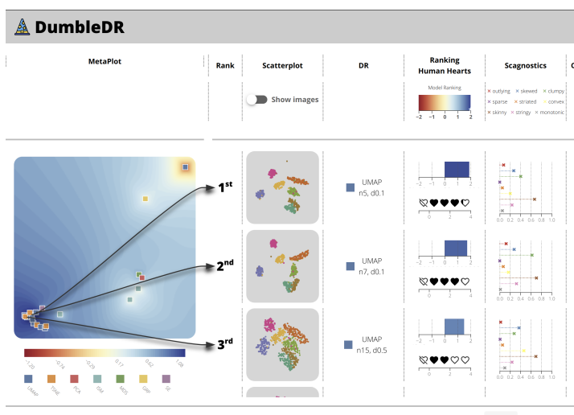

DumbleDR: Predicting User Preferences of Dimensionality Reduction Projection Quality

Venue. arXiv (2021)
Authors. Cristina Morariu, Adrien Bibal, Rene Cutura, Benoit Frenay, Michael Sedlmair
Abstract. A plethora of dimensionality reduction techniques have emerged over the past decades, leaving researchers and analysts with a wide variety of choices for reducing their data, all the more so given some techniques come with additional parametrization (e.g. t-SNE, UMAP, etc.). Recent studies are showing that people often use dimensionality reduction as a black-box regardless of the specific properties the method itself preserves. Hence, evaluating and comparing 2D projections is usually qualitatively decided, by setting projections side-by-side and letting human judgment decide which projection is the best. In this work, we propose a quantitative way of evaluating projections, that nonetheless places human perception at the center. We run a comparative study, where we ask people to select 'good' and 'misleading' views between scatterplots of low-level projections of image datasets, simulating the way people usually select projections. We use the study data as labels for a set of quality metrics whose purpose is to discover and quantify what exactly people are looking for when deciding between projections. With this proxy for human judgments, we use it to rank projections on new datasets, explain why they are relevant, and quantify the degree of subjectivity in projections selected.